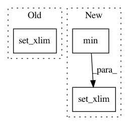

452ba152ac70560fbbf460c0e4a69c2ea2037a3c,pimp/evaluator/forward_selection.py,ForwardSelector,_plot_result,#ForwardSelector#Any#Any#,89
Before Change
ax.set_xlim(-.25, len(errors) + 0.125)
else:
ax.set_xticks(ind)
ax.set_xlim(0, len(errors) - 1)
ax.set_xticklabels(params, rotation=30, ha="right", **self.AXIS_FONT)
ax.xaxis.grid(True)
ax.yaxis.grid(True)
After Change
fig, ax = plt.subplots()
params = list(self.evaluated_parameter_importance.keys())
errors = list(self.evaluated_parameter_importance.values())
max_to_plot = min(len(errors), self.MAX_PARAMS_TO_PLOT)
ind = np.arange(len(errors))
if bar:
ax.bar(ind, errors, color=self.area_color)
else:
ax.plot(ind, errors, **self.LINE_FONT)
ax.set_ylabel("Out-Of-Bag Error", **self.LABEL_FONT)
if bar:
ax.set_xticks(ind)
ax.set_xlim(-.5, max_to_plot - 0.5)
else:
ax.set_xticks(ind)
ax.set_xlim(0, max_to_plot - 1)
ax.set_xticklabels(params, rotation=30, ha="right", **self.AXIS_FONT)
In pattern: SUPERPATTERN
Frequency: 3
Non-data size: 3
Instances
Project Name: automl/ParameterImportance
Commit Name: 452ba152ac70560fbbf460c0e4a69c2ea2037a3c
Time: 2017-02-15
Author: biedenka@informatik.uni-freiburg.de
File Name: pimp/evaluator/forward_selection.py
Class Name: ForwardSelector
Method Name: _plot_result
Project Name: librosa/librosa
Commit Name: 8e4250ba8221d956c282067d11e2df8a4c3299ab
Time: 2015-01-28
Author: brian.mcfee@nyu.edu
File Name: librosa/display.py
Class Name:
Method Name: __axis_log
Project Name: scipy/scipy
Commit Name: af6f52cd3cee8ade0c4a78d6ef254279c0af111a
Time: 2017-01-31
Author: perimosocordiae@gmail.com
File Name: scipy/spatial/_plotutils.py
Class Name:
Method Name: _adjust_bounds